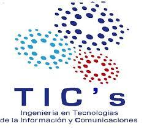

Estudiar Tic's en el Instituto Tecnólogico Superior del Occidente del Estado de Hidalgo (ITSOEH),abre una gran puerta de oportunidades en el campo laboral tecnólogico, como el desarrollo de software, ciberceguridad, base de datos, redes entre otras.
Ofrece distintas especialidades como: ciberseguridad, redes y computo en la nube.
